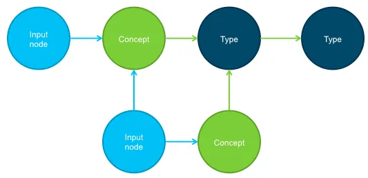

For the past three years, my role on both the Watson Prototypes and Cognitive Environments teams has largely been to make applications that showcase Watson capabilities. We worked on projects everywhere on the spectrum between pure demo and real problem-solving application. Over time, we developed a pattern to approaching each new project that shaved maybe 1–2 weeks of development time per engagement, and helped cement a methodology critical to working with probabilistic systems.
Model Structured Data as a Graph
In our world, it was all about finding new datasets to feed Watson which could then put us into a position to build something novel. Each time we selected a new dataset to build with, I would first go about modeling it in a graph database called Neo4j. One advantage to using Neo4j is that you can focus on modeling relationships as they are represented in reality, rather than translating this reality into rigid rows and columns. The graph structure is also flexible, so if we needed to add new relationships later it could be done easily. It's not that this is impossible without Neo — in the end you're just choosing a perfectly normalized data model, which you can do with MySQL or Postgres. The difference is that Neo makes it convenient to work with this model, through the query language Cypher. Cypher has a declarative query language, where you specify what data you want through ascii art. For example: MATCH (u:User {id: "taimur"})-[r:FOLLOWS]->(target:User) RETURN u, r, target will get all the users that user "taimur" follows. While this is a simple query in and of itself, you can see how this relationship chain could be extended easily, while in SQL each extension is likely another JOIN operation.
Augment Unstructured Data
The next step was to analyze any unstructured data in the model. I would run any large body of text through every Watson service that we had and augment the node with that result. This is another benefit to using the graph database model — it is especially suited to handling the output of Watson services, which parse out useful entities, keywords and concepts from the text along with an ontology so that you understand the relationships between these tags. Ultimately, Watson is giving you a structured view into your unstructured data.

Unstructured data (input node) augmented with Concepts and an Ontology.
Roomba
I built a tool called Roomba which abstracted away the process of running text through all the Watson services and storing the results in Neo4j. Using Roomba, augmenting the unstructured data with Watson added 1 line of code to an ingestion script. This ended up being indispensable — there were several occasions that required less than one week turnaround. After that, you're on to the next phase of your prototype which is building endpoints for whichever features your team wants to test out. Cypher greatly simplifies writing complicated queries, and the Watson augmentations offer a natural language interface to the data. You're now in a position to build ideas easily, and you haven't had to have had a creative thought yet.
Working with a Probabilistic System
Augmenting your data and having it in a place where it's easy to query is especially critical to prototyping with a probabilistic system. Any attempt to first design an application in a vacuum and then to just build it is doomed — these steps are fundamentally inseparable because you discover the characteristics of the interplay between data and system as you go along. Over time you can whip your system into better shape for your domain by training custom models, but there's no guarantee you'll get perfect performance and your design will need to respond accordingly. Thus having good tools and a flexible structure on the engineering side will be necessary to delivering a cogent prototype/demo/application at the end of the day.
Conclusion
The above approach makes all possible trade-offs towards convenience and flexibility. If you need to do rapid idea testing and validation while working with a probabilistic system, I believe this methodology applies. Obviously if your idea is validated and you need to scale, you probably won't continue running your data through every possible Watson service and keeping it on one Neo4j database. But hey, if you're not entirely sure what you're building yet, and you need to build it fast, this is for you.